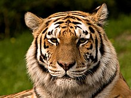

사자

북아프리카와 중동, 서아시아, 유럽, 아라비아에서도 과거엔 서식했었으나
유럽 지역에서는 기원전부터 씨가 말랐고, 인도를 제외한 아시아 지역에서도 19~20세기
부터 하나둘씩 사라져갔다. 인도의 기르숲이란 곳에도 사자가 약간 남아있기는 하다.
현재도 개체수가 계속 감소 중인 사자기에, 나중엔 일부 보호구역에서 소수만이 남을것이다.
간지나는 비주얼과 강인한 사냥 능력으로 오랫동안 '백수의 왕'으로 불리우며 왕의 상징으로
여겨지는 등 인기를 누려온 동물이다.
호랑이

호랑이(虎狼이) 또는 칡범, 갈범(이는 표범과 구별하여 일컫는 말이다. )은
고양이과에 속하는 맹수다. 어린 개체는 개호주라 부른다.[2] 고양이과 동
물중 그 크기가 가장 크며, 스라소니나 표범과 재규어를 제외하면 유일하게 수영을 할 수 있
다.(단, 재규어같은 경우에는 단지 사냥을 목적으로 수영을 할뿐 호랑이처럼 주기
적으로 물에 들어가지는 않는다). 호랑이의 크기는 아종에 따라 다양한데, 발리호랑이
는 약 100kg 미만이며, 시베리아호랑이는 수컷의경우 최대 360kg에 이르기도 한
다. 대개 황갈색 바탕에 검은색 줄무늬가 있다. 드물게 흰색을 띤 백호가 있는데,
이는 백색증과 무관한 열성유전자가 발현되어 나타나는 것이다. 뼈를 비롯한 신체의 거
의 대부분의 부위가 한약으로 쓰이고 있으며, 그로 인해 심각한 생존의 위협을 받고있다.
호랑이(虎狼이) 또는 칡범, 갈범(이는 표범과 구별하여 일컫는 말이다. )은
고양이과에 속하는 맹수다. 어린 개체는 개호주라 부른다.[2] 고양이과 동
물중 그 크기가 가장 크며, 스라소니나 표범과 재규어를 제외하면 유일하게 수영을 할 수 있
다.(단, 재규어같은 경우에는 단지 사냥을 목적으로 수영을 할뿐 호랑이처럼 주기
적으로 물에 들어가지는 않는다). 호랑이의 크기는 아종에 따라 다양한데, 발리호랑이
는 약 100kg 미만이며, 시베리아호랑이는 수컷의경우 최대 360kg에 이르기도 한
다. 대개 황갈색 바탕에 검은색 줄무늬가 있다. 드물게 흰색을 띤 백호가 있는데,
이는 백색증과 무관한 열성유전자가 발현되어 나타나는 것이다. 뼈를 비롯한 신체의 거
의 대부분의 부위가 한약으로 쓰이고 있으며, 그로 인해 심각한 생존의 위협을 받고있다.